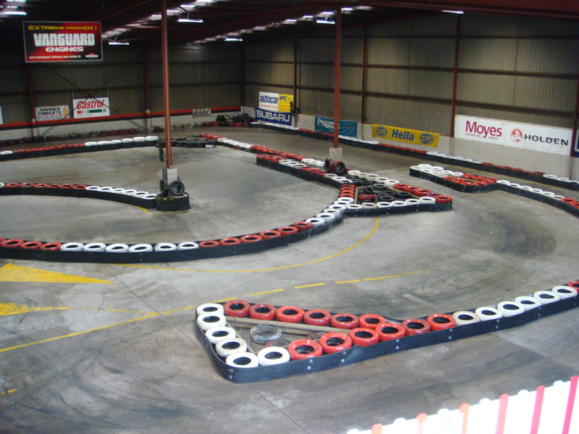
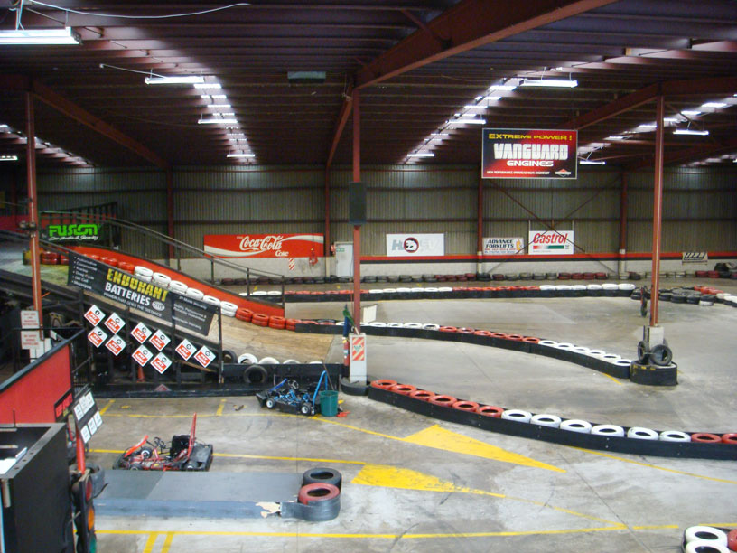
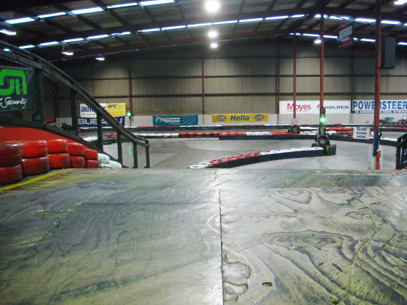

<section class="wow zoomIn">
  <div class="container">
    <div class="row">
      <div class="col-lg-12 text-center">
        <h2 class="section-heading">Track</h2>
        <h3 class="section-subheading text-muted">
          We boast New Zealand's only two level go kart track!
          <br>
          Not only do we have the two levels but we have a long fast straight, tighter more technical hair pin corners and also fast corners for passing!
        <h3>
        
        
        <h3 class="section-subheading text-muted">
          We welcome all ages from 10 years old and up to give it a go, its awesome fun and customers always leave with a massive smile on their face.
        <h3>
        
        <h3 class="section-subheading text-muted">
          We use the latest in lap timing equipment, our system is a computerized fully automated lap scoring system which enables us to control races properly and give you the results you want.
          <br>
          The timing system we use is the same as that used by professional race tracks around the world.
          <br>
          After your race on the track you can expect to see the following from our system:
          <ul>
            <li>Finishing positions.</li>
            <li>How much each team trailed the winning team by.</li>
            <li>Fastest lap of the race.</li>
            <li>In which lap the fastest time what done in.</li>
            <li>Number of laps completed by each person/team.</li>
            <li>Total racing time.</li>
          </ul>
          And there is a whole lot more information that we are able to extract from you system.
        <h3>
      </div>
    </div>
    <!-- /.row -->
  </div>
  <!-- /.container -->
</section>
